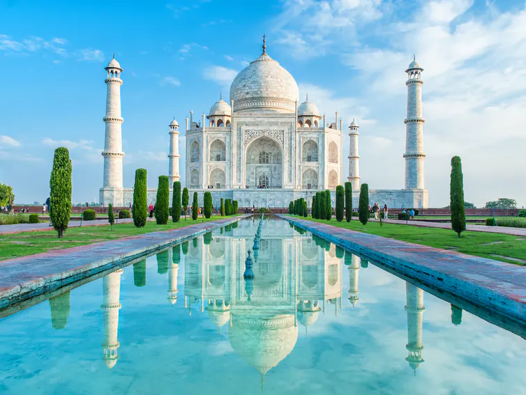
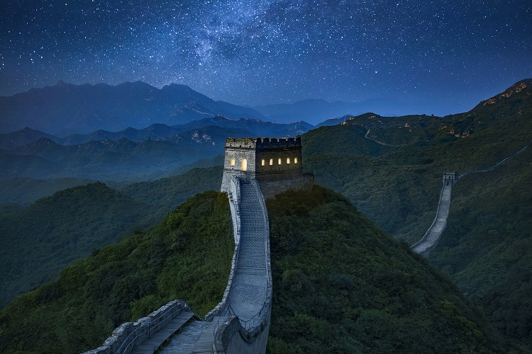
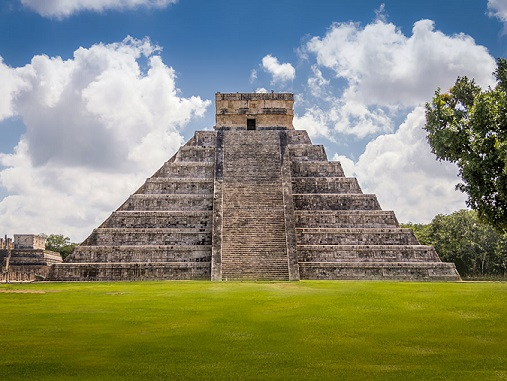
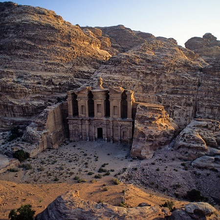
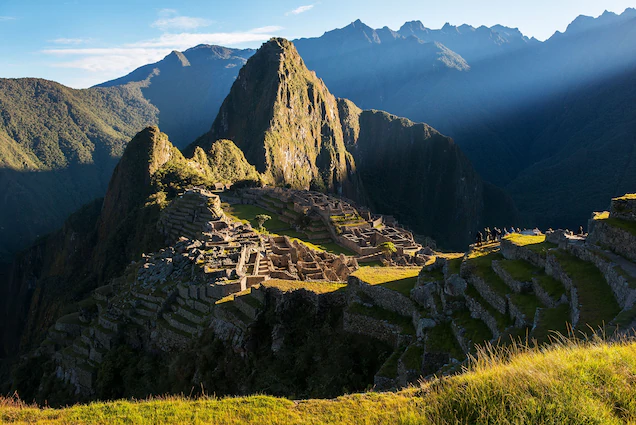
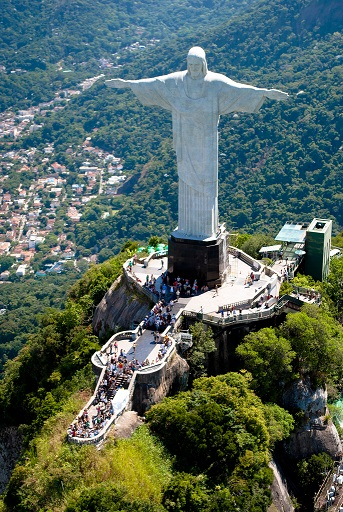

7 WONDERS OF THE WORLD
- Taj Mahal

The Taj Mahal is a beautiful white marble mausoleum in the city of Agra, India.
It is widely considered to be one of the greatest architectural masterpieces in the world and is listed as one of the New Seven Wonders of the World.
Every year, the Taj Mahal receives visits from between four and six million tourists from all over the world.
- Great Wall of China

Large parts of the fortification system date from the 7th through the 4th century BCE.
In the 3rd century BCE Shihuangdi (Qin Shihuang), the first emperor of a united China (under the Qin dynasty), connected a
number of existing defensive walls into a single system. Traditionally,
the eastern terminus of the wall was considered to be Shanhai Pass (Shanhaiguan) in eastern Hebei province along the coast of
the Bo Hai (Gulf of Chihli), and the wall’s length—without its branches and other secondary sections—was thought to extend for some 4,160 miles (6,700 km).
However, government-sponsored investigations that began in the 1990s revealed sections of wall in Liaoning,
and aerial and satellite surveillance eventually proved that this wall stretched continuously through much of the province.
The greater total length of the Ming wall was announced in 2009.
- Chichen Itza

This sacred site was one of the greatest Mayan centres of the Yucatán peninsula.
Throughout its nearly 1,000-year history, different peoples have left their mark on the city.
The Maya and Toltec vision of the world and the universe is revealed in their stone monuments and artistic works.
The fusion of Mayan construction techniques with new elements from central Mexico make Chichen-Itza one of the most important examples of the Mayan-Toltec
civilization in Yucatán. Several buildings have survived, such as the Warriors’ Temple, El Castillo and the circular observatory known as El Caracol.
- Petra

The site is considered significant by historians and archeologists alike because of its beautiful rock-cut
architecture and innovative water management system, the latter of which made the region inhabitable,
given that it is surrounded by desert and rugged, mountainous terrain.
- Machu Picchu

Machu Picchu was opened to the world since the arrival of the professor and anthropologist Hiram Bingham,
who promoted the site processing the auspices of Yale University,
the National Geographic Society and the Peruvian government in order
to begin the study of the archaeological complex. However, Hiram Bingham was not
the discoverer of Machu Picchu, and because there were some traces of people who lived in
the place for years. The significance of the citadel of Machu Picchu for Tahuantinsuyo was very noticeable.
An excellent urban planning interconnected with other nearby sites to Machu Picchu became a point of reference.
In agriculture the region is characterized by its production of corn and potatoes.
- Christ the Redeemer

The statue of Christ the Redeemer has become a symbolic protector of people.
Like Jesus Christ, the statue protects the urban environment,
like a roof over your head. Cristo Redentor is as important as any shelter.
Christ the Redeemer provides protection for the soul
- Colosseum

The Colosseum in Rome, Italy, is a large amphitheater that hosted events like gladiatorial games.
The Colosseum, also named the Flavian Amphitheater, is a large amphitheater in Rome.
It was built during the reign of the Flavian emperors as a gift to the Roman people.